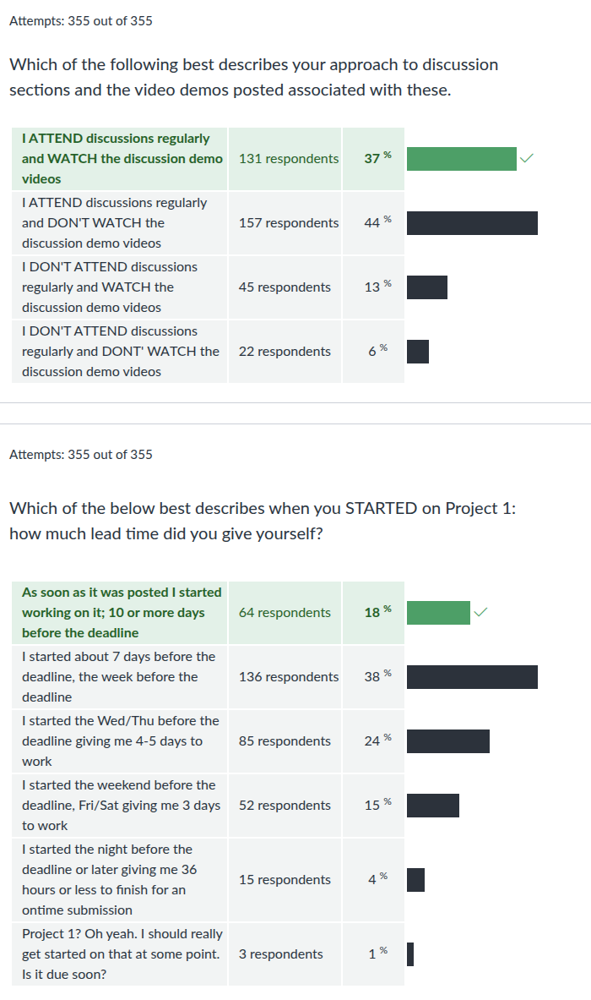

CMSC 216 F2024: Midterm Feedback Survey Results
Table of Contents
Summary Statistics for Multiple Choice Questions





Frequent Free-form Feedback
Below counts are based on a review of 50% of 505 free-form responses. An estimate of the percent of the class that would likely have mentioned the given item is presented as well.
| Count | Estim. % | Comment |
|---|---|---|
| 63 | 25% | Exam 1 was challenging / hard / too long! |
| 38 | 15% | Course has been overall fair / manageable / going well |
| 9 | 4% | Practice Exam was much easier than the Actual Exam |
| 6 | 2% | Workload combined with other classes is overwhelming |
| 7 | 3% | Authenticating via Duo to login to GRACE is annoying |
Notable Comments + Responses
Instructor responses are in italics.
- The Exam cooked me
- Exam 1 was pretty hard, I don't like how a lot of it was writing actual code. I prefer some multiple choice and debugging.
I have always struggled with writing code on paper. If multiple choice was on the exam it would have made it easier.
Prof K: The most frequent element of feedback from students was that they found Exam 1 to be challenging. That was by design and graders were under instructions to grade "gently" overall. The resulting grades are right within the tolerances that I'd like to see. In the future, I'd likely stick to one larger coding problem rather than two medium problems. I liked both the problems on the exam as they allowed students to show different things they learned: mastery of the project concepts and basic program design when I/O is required. However, the combination of these was 10% or so longer for the exam than ideal, a feature many students reported on in their feedback. Exam 2 and the Final Exam are likely to be a bit shorter which will make taking them and grading them easier.
As for multiple choice questions, they are indeed easier and appropriate to prepare you for careers where you answer multiple choice questions for a living. I'm not aware of any such careers, in computing or elsewhere, so for now I'll stick to questions that examine one's understanding of computing concepts that do come up in CS careers such as "writing actual code".
I wish I did not have to use duo every time to sign on to the sever, especially twice. Other than that this class is very cool
Prof K: This is a drag but not uncommon for online systems. I've gone over GRACE with some of the operators who administer it and it does not look like there is any easier way to connect than the one we've settled on. Consider exploring a local setup like Windows Subsystem for Linux, Virtual Machines, or Docker if you find the login too painful.
I wish the projects were submitted in parts. This would keep me on track and break down the project in smaller parts that I can focus on for understanding.
Prof K: I tried this several times in the past with "milestone" deadlines. Students complained that they now had multiple deadlines for the project which was more annoying/stressful. Since it takes more work to implement multiple deadlines, I just gave that up. It is an extremely useful skill to learn to plan and allocate time for projects that take more than a single sitting. Come talk to me if you want to work on strategies to do so.
I struggle hard on fixing complicated problems without the help of office hours which made the weekend a complete waste for my project as I had to redo everything anyway because I was so wrong.
Prof K: That does sound frustrating. Give yourself credit though: you did some things wrong but learned NOT to do them again which will be extremely useful as you go forward. As we get older, we tend to underestimate the value of negative training examples: if things don't go well, we think that we've failed. Rather, failing usually speeds our learning more. Observe any toddler who constantly tips over as they learn to walk and you'll see the power of failing repeatedly and remaining undeterred. Keep at it.
C is a little more complex than Java but I feel the lectures have done a great job teaching me C and explaining a lot of things that are abstracted away.
I'm glad that you are finding lecture to be illuminating. I would like to correct one item: C is very simple compared to Java. In "The C Programming Language, 2nd Edition", Kernighan and Ritchie explain the entire language in something like 250 pages. About half that is probably the core language with the other half things like format specifiers for
printf()and discussion of standard library functions. The latest "Java Language Specification" from Oracle (https://docs.oracle.com/javase/specs/) is nearly 900 pages and has no discussion of its extensive standard library. Granted, Java incorporates features like Threads which you can do in C but are not a core part of its language so this is not an apples-to-apples comparison. However, if you think Java is less complex than C, go look at the whole of Java: it is enormous, complex, and useful.There is a bit of confusion on the labs sometimes because the material often has not been taught in class yet.
This is a perpetual problem. Lab work is often what we are doing in lecture the same week. It means topics in lab align with lecture but lead it. While not ideal, TAs are under instruction to teach about these concepts to complement the lecture presentation. I realize that this might be jarring for some students, but it allows us to complement all topics with exercises and to cover ground quickly and rigorously. If the course were about 2 weeks longer, we could line things up so that lecture topics always lead labs. However, time is always against us.
I would appreciate subtitles on the lecture recordings.
Prof K: Annoyingly this is not done automatically. I can, however, make manual requests to auto-gen subtitles going forward since there is a desire for it.
I think it may be better if one discussion was spent on lab and the other was spent on homework. In its current structure, if you finish the lab before Monday, it makes coming to discussion that day feel a bit useless.
Prof K: I had not thought to give some coverage to the HWs during discussion. My intent for discussions is to NOT put too much content into them so that students have a chance to ask staff detailed questions about the exercise and other course topics. I'll consider your suggestion, though, as sometimes particular HWs have instructive examples in them that might be worth some discussion time
In this class you don't really have practice problems to get better. It either clicks, or it doesn't.
Prof K: This is a troubling conclusion. Generally human endeavors that are complex enough to merit careers and admiration require one to build skills. For some folks, those skills may come fast and for others, it takes lots of practice. However, I've yet to see anything people do that, with some practice, others can't get better at. This course is specifically designed to give students low stakes opportunities to practice skills (Labs and HWs), higher stakes actives to show some mastery with some support (Projects), and evaluative work where students illustrate what they have learned (Exams). If you are finding that you are struggling on some of the more difficult exercises, talk to staff, especially me (Prof K) about your study habits. It may be that you need to spend some more time. Trust me, though, that if you put forth focused time and effort, eventually things do click together.
I think it would also help to extend the Office Hour time if that is possible, or just to do so when a project deadline is coming up.
Prof K: Almost all staff members extended their office hours during the week Project 1 was due to support students finishing it. Some staff face hard deadlines like their own courses and are under direct instruction from me not to prioritize their own academics over their TA duties. That means some students who want more help won't get it. That said, according to the responses on office hours impressions above, folks who want office hours are getting help at reasonable rate. Things are always tough around deadlines which is why discussion sections are open to students for help during those periods.
vscode going wee, debugging is tuff like valgrind. terminal is tuff
What we do is tough. That's why it's so satisfying. Keep Hacking.